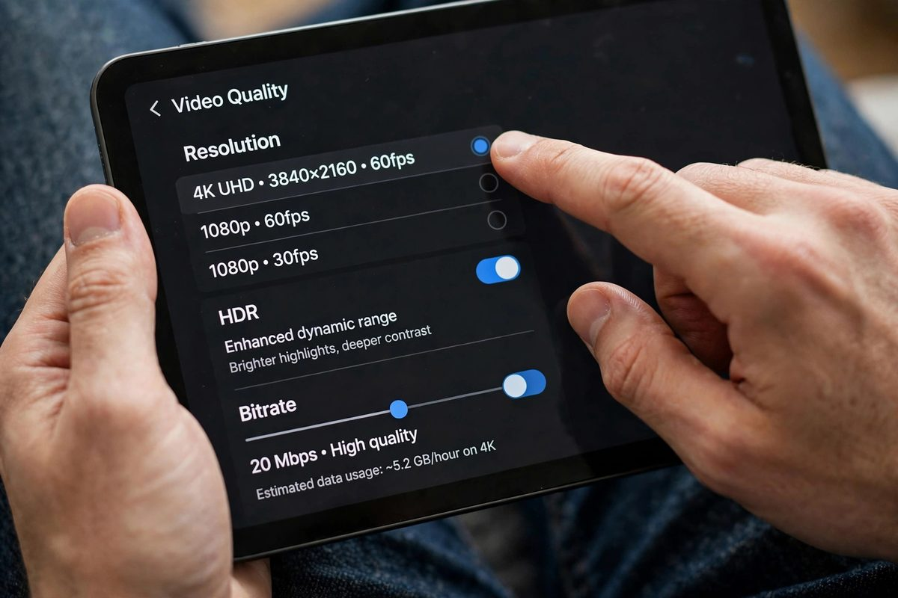

Why Your Downloaded YouTube Videos Look Blurry (and How to Fix It)
Blurry downloads explained: quality settings, source resolution, and playback tips for sharper video.
A video that looked sharp on YouTube but blurry after downloading is a common complaint, and it almost always has one of three causes: the download was saved at a low quality, the original video was low quality, or the player is showing the video at the wrong size. This guide explains each cause, how to tell them apart, and what you can do about each one, so you stop wasting time re-downloading a video that was never sharp to begin with.
The download quality was too low
The most common cause is simple: the video was downloaded at 360p or 480p to save space, and now it looks soft on a larger screen. Check the file's resolution in your player's properties or details panel. If it says 640 by 360, that is the whole story, and the fix is to download it again at 720p or 1080p if that quality is available. Always check the quality setting before a download, especially on mobile, where the app may default to a low quality on mobile data.
The original video was low quality
Some videos were uploaded years ago at 480p or lower, and no download setting can add detail that was never there. You can check the original quality on YouTube by opening the quality menu: if 1080p is not listed, the video was not uploaded in high definition. Old phone recordings, screen captures, and early YouTube uploads often fall into this group. Upscaling tools can make such videos slightly smoother, but they cannot recover real detail, and the result usually looks artificial.
Playback and scaling problems
A video can look blurry if it is stretched to fill a screen much larger than its resolution, such as a 480p video on a 55-inch television. It can also look soft if the player's scaling is poor, or if the device is using a battery-saving mode that lowers the display resolution. Try playing the file in VLC, which has good scaling, and try it on the device you intend to watch it on. If it looks fine on a phone but soft on a TV, the file is probably fine and the screen is simply too big for its resolution.
Getting the sharpest result
For the sharpest downloads, choose the highest quality the video offers, download on Wi-Fi, and watch on a screen that matches the resolution. Keep your player updated, because older players sometimes mishandle modern codecs. If you are a creator, upload in the highest resolution you can, because viewers who download your video can only get what you uploaded. And remember that a slightly soft video with good audio is usually more watchable than a sharp video that buffers constantly.
Check your screen settings
Sometimes the video is fine and the screen is the problem. Many phones and laptops have a battery-saver mode that lowers the screen resolution or the refresh rate, which makes everything look softer, including downloaded videos. Check your display settings and turn off any power-saving mode while you watch. On a computer, check that the display is running at its native resolution: a monitor set to the wrong resolution will blur everything, not just video. On a television, turn off motion smoothing and noise reduction for downloaded videos, because those processing features can soften the picture. And clean the screen: a smudged phone screen makes any video look worse than it is. If the same file looks sharp on one device and soft on another, the file is not the problem, and the settings of the soft device are the first place to look.
Frequently Asked Questions
Why is my download blurry?
It was probably saved at a low quality such as 360p, or the original video was uploaded at a low resolution.
Can I improve a blurry download?
No. Re-downloading at a higher quality is the only fix, and it only helps if a higher quality exists.
Why does the video start blurry then sharpen?
Streaming starts at low quality to load fast, then raises quality as the connection proves itself.